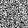
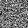
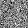
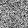

Diffusion models are trained to reverse the process of progressively adding noise to an image. Starting with a clean image, noise is incrementally added until it becomes indistinguishable from pure noise. The diffusion model takes this noisy image at a given timestep and predicts the noise to reconstruct the original image.
DeepFloyd is a powerful two-stage text-to-image diffusion model, capable of generating high-quality images.
Visualizations
DeepFloyd uses text prompts to generate aligned images, with "a high quality photo" acting as a null prompt for unconditional generation. This forces noisy images onto the natural image manifold. Images with more number of inference steps taken (more denoising) actually ocurring are more blurry and lower quality signifying noise and are less represenative than ones with more infernece steps taken where they get more robotic but result in higher quality images that represent the prompt more accurately and precisely
Sampling with num_inference_steps=5Sampling with num_inference_steps=20
Test Image with Various Noise Levels
Progressively noisy test image at timesteps t = [250, 500, 750]
Gaussian Denoising
Gaussian-denoised images for t = [250, 500, 750]
One-Step Denoising
Original, noisy, and denoised images using a pretrained diffusion model
1.4 Iterative Denoising
In this section, we enhance the denoising capabilities of the diffusion model by implementing iterative denoising. While single-step denoising provides reasonable results, it seems to struggle more greatly as noise levels increase. This makes intuitive sense as we are further from the distribution of the natural manifold of images, which would intuitively be an incredibly small subset of the distribution of pixels in general which is mostly just imperceptible noise to us. Iterative denoising trys to help with this by repeatedly reducing noise through multiple steps, starting from a noisy image until a clean image is recovered. As such if the model learns a random walk/path from noise to the natural image manifold through iteration we can do this and expect better results.
The iterative denoising process involves striding through timesteps, gradually moving from high noise to low noise. This approach leverages a sort of linear interpolation between signal and noise to estimate clean images efficiently without requiring all 1000 diffusion steps. By skipping steps, we make progress faster during inference time which is great!
Visualizations
Iterative Denoising Progress
Noisy Image at t=90Intermediate ImageIntermediate ImageIntermediate ImageFinal Clean Image
Comparisons
One-Step DenoisingGaussian Blurred Image
1.5 Diffusion Model Sampling
Using the iterative denoising function, we can generate entirely new images by starting with pure noise and progressively denoising. This allows us to create images from scratch that resemble realistic photographs.
Classifier-Free Guidance (CFG) improves the quality of generated images by balancing conditional and unconditional noise estimates. By amplifying the conditional signal, CFG produces more coherent and detailed images, albeit at the cost of reduced diversity, which in hindsight seems more definitional than reality - unsure?
Visualizations
Generated Samples with CFG
Sample 1Sample 2Sample 3Sample 4Sample 5
1.7 Image-to-Image Translation
This section explores using diffusion models for editing images. By adding controlled noise to an image and guiding the translation into noise - i.e. or the denoising process, we can generate modified versions of the original image while maintaining realism, which intuitively feels as though we are going around a small epsilon bound within the current image while staying on the natural image manifold.
Inpainting allows us to edit specific regions of an image while preserving other parts. Using a binary mask, we basically force the model to "fill" in the image with something that makes sense with the rest of the image while travelling to the natural image manifold (it is quite conditional in that sense as we can see in the results below, they make semantic sense visually speaking).
Visualizations
Test Image Inpainting
Inpainted Test ImageOriginal Reference for Inpainting
Custom Image Inpainting
Inpainted Custom Image 1Original Custom Image 1
Custom Image Inpainting
Inpainted Custom Image 2
1.7.3 Text-Conditional Image-to-Image Translation
This section adds text-based control to the image denoising process, guiding the projection onto the natural image manifold using a specific text prompt. By replacing the prompt "a high quality photo" with other precomputed prompts, we can create images that reflect both the input noise and the specified text description. Below are some pretty cool examples. It appears that the conditioning of the prompt steers the diffusion model a lot during the initial step as one of the examples essentially is a rocket ship and slowly merges with the original input image as it approaches that distribution of specific pixels, which results in a merge of both concepts that visually makes sense to us so that was really cool to see!
Visualizations
Test Image Edits
Custom Image Edits
1.8 Visual Anagrams
The visual anagram is supposed to "combine" two images into one, where if we flip it, it displays a different image visually than when it was right side up. I have included an image depicting the oil painting of people around a campfire as well as the oldman in two cases as well as my own images for this. Feel free to zoom in for best visibility here.
Visualizations
1.9 Hybrid Images
Hybrid images combine two concepts, displaying one at a distance and another up close by blending low and high-frequency noise estimates. For example, a skull image can transform into a lithograph of a waterfall when viewed closely.
Visualizations
Part B: Diffusion Models from Scratch
Section 1: Overview
In this part of the project, we create and train a diffusion model from scratch using the MNIST dataset.
The project begins with implementing a single-step denoising UNet. This model is designed to take a noisy image and predict a clean version by optimizing an L2 loss, which would be the reconstruction loss measured in euclidean terms. We could use other norms but this is cts properties that make it easy intuitively to work with when we are travelling from noise to "images."
The UNet architecture includes several standard tensor operations, such as downsampling, upsampling, and skip connections. The training process overall includes generating noisy images in real time by sampling pixels iteratively from a guassian normally standard distribution (curious to see what happens if we do it from different distributions, are some easier to train then others??), optimizing with an Adam optimizer, and visualizing the denoising results after multiple epochs - pretty standard stuff.
Visualizations
Noising process using different sigma valuesTraining loss curve during trainingResults after the first epochResults after the fifth epochResults with out-of-distribution noise levels
Part 2: Training a Diffusion Model
In this section, we build upon the concepts introduced earlier to train a diffusion model using a UNet architecture rather than using a pretrained one, so we can control a lot more aspects of the model. However, obviously we lose a lot of the pretrained model's capabilities since we can only build this in google collab with MNIST data. The main idea is to build a Denoising Diffusion Probabilistic Model (DDPM) to iteratively denoise an image and generate realistic outputs from pure noise like how the model worked conceptually in the previous section.
Rather than predicting clean images directly, the UNet is trained to predict the added noise in the noisy image. This approach simplifies training while maintaining equivalence to previous objectives. The training involves iteratively denoising noisy images generated at varying timesteps, where the noise variance is controlled by a predefined schedule.
To condition the UNet on the timestep, we introduce a fully-connected block (FCBlock) that injects the scalar timestep into the network. This conditioning is normalized to a range of [0, 1] and modulates specific layers in the UNet architecture. This type of condiitoning is called time-conditioning, where we predict the noise added/removed at a specific time step. We also implement with classifier guidance as well as class conditioning to get the best results possible.
2.1 Adding Time Conditioning to UNet
The time-conditioned UNet modifies key layers to incorporate timestep information basically through this FCBlock which is supposed to embed the normalized timestep, which we note is a monotonic transformation mathematically speaking so we don't lose the relative information contained in the timestep relative to the scope of timesteps we are training the model to be in distribution for, into the architecture. The embedded signal modulates layers such as unflattening and upsampling blocks, effectively conditioning the model on the current timestep during denoising.
2.2 Training the UNet
The training process involves randomly selecting an image and a timestep, adding noise to the image based on the timestep, and training the UNet to predict the noise, essentially creating this mapping of random walks from the guassian assumed distribution of noise images to the natural manifold. This makes sense why randomly sampling from pixels in a uniform distribution failed to work for the other model above since that was technically "out of distribution" noise pixels which only seems brighter to us but doesn't work with the pretrained model - atleast that is what I thought just a side note. The model is optimized with an Adam optimizer and uses exponential learning rate decay to ensure convergence over 20 epochs.
Objective: Train a time-conditioned UNet to predict noise in a given noisy image for any timestep. The MNIST dataset is used, with a batch size of 128 and a hidden dimension of 64 for the UNet. The training loss is monitored throughout the process.
Algorithm for training the time-conditioned UNet
2.3 Sampling from the UNet
Once trained, the UNet can iteratively denoise a pure noise image to generate realistic outputs. The sampling process uses the variance schedule defined during training and does not require variance prediction. Sampling results are visualized for different training epochs to demonstrate the model's progress.
Algorithm for sampling from the time-conditioned UNet
Visualizations
Training loss curve for the time-conditioned UNetSampling results after 5 epochsSampling results after 20 epochs
2.4 Adding Class-Conditioning to UNet
To further improve results and provide more control over image generation, we can actually choose to condition the UNet on the class (since we are choosing to only generate 10 types of black and white images, this would be our natural manifold sample space which is mostly black and white completely binary pixels so it is an extremely small manifold of space that the model learns prety easily) of the digit (0-9). This involves adding two more FCBlocks to the UNet and using a one-hot vector to represent the class. To maintain utility between relying too much on conditioning and unconditioned model usecases, we can just directly incorporate a dropout mechanism where the class-conditioning vector is set to zero 10% of the time. Note this is not the same thing as actual model dropout where model internally are dropout off completely (neurons are off). This is more of a data augmentation technique where we have 10% of examples to be unconditioned generations and continue the reconstruction loss and optimizer steps there.
Class-conditioning integrates both time and class information into the UNet architecture. This is done by modulating the network layers with both time and class embeddings, allowing for better and more controlled image generation.
Algorithm for training the class-conditioned UNet
Training Process
The training process for the class-conditioned UNet is similar to the time-only conditioning setup, with the addition of the class-conditioning vector. Periodic unconditional generation is also performed to ensure the model works without class information. The network is optimized to predict noise while incorporating both time and class conditioning.
Class-conditioned UNet training loss curve
2.5 Sampling from the Class-Conditioned UNet
Sampling from the class-conditioned UNet follows a similar procedure as in time-only conditioning, but with classifier-free guidance for improved conditional results. This process ensures high-quality digit generation across all classes.
Algorithm for sampling from the class-conditioned UNet
Visualizations
Sampling results after 5 epochsExample 1Example 2Example 3Example 4Sampling results after 20 epochsExample 1Example 2Example 3Example 4
Bells & Whistles
Epoch 0 - Class 0 - Sample 0Epoch 0 - Class 0 - Sample 1Epoch 0 - Class 0 - Sample 2Epoch 0 - Class 0 - Sample 3Epoch 0 - Class 1 - Sample 0Epoch 0 - Class 1 - Sample 1Epoch 0 - Class 1 - Sample 2Epoch 0 - Class 1 - Sample 3Epoch 0 - Class 2 - Sample 0Epoch 0 - Class 2 - Sample 1Epoch 0 - Class 2 - Sample 2Epoch 0 - Class 2 - Sample 3Epoch 0 - Class 3 - Sample 0Epoch 0 - Class 3 - Sample 1Epoch 0 - Class 3 - Sample 2Epoch 0 - Class 3 - Sample 3Epoch 0 - Class 4 - Sample 0Epoch 0 - Class 4 - Sample 1Epoch 0 - Class 4 - Sample 2Epoch 0 - Class 4 - Sample 3Epoch 0 - Class 5 - Sample 0Epoch 0 - Class 5 - Sample 1Epoch 0 - Class 5 - Sample 2Epoch 0 - Class 5 - Sample 3Epoch 0 - Class 6 - Sample 0Epoch 0 - Class 6 - Sample 1

Epoch 0 - Class 6 - Sample 2Epoch 0 - Class 6 - Sample 3Epoch 0 - Class 7 - Sample 0Epoch 0 - Class 7 - Sample 1Epoch 0 - Class 7 - Sample 2Epoch 0 - Class 7 - Sample 3Epoch 0 - Class 8 - Sample 0Epoch 0 - Class 8 - Sample 1Epoch 0 - Class 8 - Sample 2Epoch 0 - Class 8 - Sample 3Epoch 0 - Class 9 - Sample 0Epoch 0 - Class 9 - Sample 1Epoch 0 - Class 9 - Sample 2Epoch 0 - Class 9 - Sample 3Epoch 4 - Class 0 - Sample 0Epoch 4 - Class 0 - Sample 1Epoch 4 - Class 0 - Sample 2Epoch 4 - Class 0 - Sample 3Epoch 4 - Class 1 - Sample 0Epoch 4 - Class 1 - Sample 1Epoch 4 - Class 1 - Sample 2Epoch 4 - Class 1 - Sample 3

Epoch 4 - Class 2 - Sample 0Epoch 4 - Class 2 - Sample 1Epoch 4 - Class 2 - Sample 2Epoch 4 - Class 2 - Sample 3Epoch 4 - Class 3 - Sample 0Epoch 4 - Class 3 - Sample 1Epoch 4 - Class 3 - Sample 2Epoch 4 - Class 3 - Sample 3Epoch 4 - Class 4 - Sample 0Epoch 4 - Class 4 - Sample 1Epoch 4 - Class 4 - Sample 2Epoch 4 - Class 4 - Sample 3Epoch 4 - Class 5 - Sample 0Epoch 4 - Class 5 - Sample 1Epoch 4 - Class 5 - Sample 2Epoch 4 - Class 5 - Sample 3Epoch 4 - Class 6 - Sample 0Epoch 4 - Class 6 - Sample 1Epoch 4 - Class 6 - Sample 2Epoch 4 - Class 6 - Sample 3Epoch 4 - Class 7 - Sample 0Epoch 4 - Class 7 - Sample 1Epoch 4 - Class 7 - Sample 2

Epoch 4 - Class 7 - Sample 3Epoch 4 - Class 8 - Sample 0Epoch 4 - Class 8 - Sample 1Epoch 4 - Class 8 - Sample 2Epoch 4 - Class 8 - Sample 3Epoch 4 - Class 9 - Sample 0Epoch 4 - Class 9 - Sample 1Epoch 4 - Class 9 - Sample 2Epoch 4 - Class 9 - Sample 3Epoch 9 - Class 0 - Sample 0Epoch 9 - Class 0 - Sample 1Epoch 9 - Class 0 - Sample 2Epoch 9 - Class 0 - Sample 3Epoch 9 - Class 1 - Sample 0Epoch 9 - Class 1 - Sample 1Epoch 9 - Class 1 - Sample 2Epoch 9 - Class 1 - Sample 3Epoch 9 - Class 2 - Sample 0Epoch 9 - Class 2 - Sample 1Epoch 9 - Class 2 - Sample 2Epoch 9 - Class 2 - Sample 3Epoch 9 - Class 3 - Sample 0

Epoch 9 - Class 3 - Sample 1Epoch 9 - Class 3 - Sample 2Epoch 9 - Class 3 - Sample 3Epoch 9 - Class 4 - Sample 0Epoch 9 - Class 4 - Sample 1Epoch 9 - Class 4 - Sample 2Epoch 9 - Class 4 - Sample 3Epoch 9 - Class 5 - Sample 0Epoch 9 - Class 5 - Sample 1Epoch 9 - Class 5 - Sample 2Epoch 9 - Class 5 - Sample 3Epoch 9 - Class 6 - Sample 0Epoch 9 - Class 6 - Sample 1Epoch 9 - Class 6 - Sample 2Epoch 9 - Class 6 - Sample 3Epoch 9 - Class 7 - Sample 0Epoch 9 - Class 7 - Sample 1Epoch 9 - Class 7 - Sample 2Epoch 9 - Class 7 - Sample 3Epoch 9 - Class 8 - Sample 0Epoch 9 - Class 8 - Sample 1Epoch 9 - Class 8 - Sample 2Epoch 9 - Class 8 - Sample 3Epoch 9 - Class 9 - Sample 0Epoch 9 - Class 9 - Sample 1Epoch 9 - Class 9 - Sample 2Epoch 9 - Class 9 - Sample 3Epoch 19 - Class 0 - Sample 0Epoch 19 - Class 0 - Sample 1Epoch 19 - Class 0 - Sample 2Epoch 19 - Class 0 - Sample 3Epoch 19 - Class 1 - Sample 0Epoch 19 - Class 1 - Sample 1Epoch 19 - Class 1 - Sample 2Epoch 19 - Class 1 - Sample 3Epoch 19 - Class 2 - Sample 0Epoch 19 - Class 2 - Sample 1Epoch 19 - Class 2 - Sample 2Epoch 19 - Class 2 - Sample 3Epoch 19 - Class 3 - Sample 0Epoch 19 - Class 3 - Sample 1Epoch 19 - Class 3 - Sample 2Epoch 19 - Class 3 - Sample 3Epoch 19 - Class 4 - Sample 0Epoch 19 - Class 4 - Sample 1Epoch 19 - Class 4 - Sample 2Epoch 19 - Class 4 - Sample 3Epoch 19 - Class 5 - Sample 0Epoch 19 - Class 5 - Sample 1Epoch 19 - Class 5 - Sample 2Epoch 19 - Class 5 - Sample 3Epoch 19 - Class 6 - Sample 0Epoch 19 - Class 6 - Sample 1Epoch 19 - Class 6 - Sample 2Epoch 19 - Class 6 - Sample 3Epoch 19 - Class 7 - Sample 0Epoch 19 - Class 7 - Sample 1Epoch 19 - Class 7 - Sample 2Epoch 19 - Class 7 - Sample 3Epoch 19 - Class 8 - Sample 0Epoch 19 - Class 8 - Sample 1Epoch 19 - Class 8 - Sample 2Epoch 19 - Class 8 - Sample 3Epoch 19 - Class 9 - Sample 0Epoch 19 - Class 9 - Sample 1Epoch 19 - Class 9 - Sample 2Epoch 19 - Class 9 - Sample 3